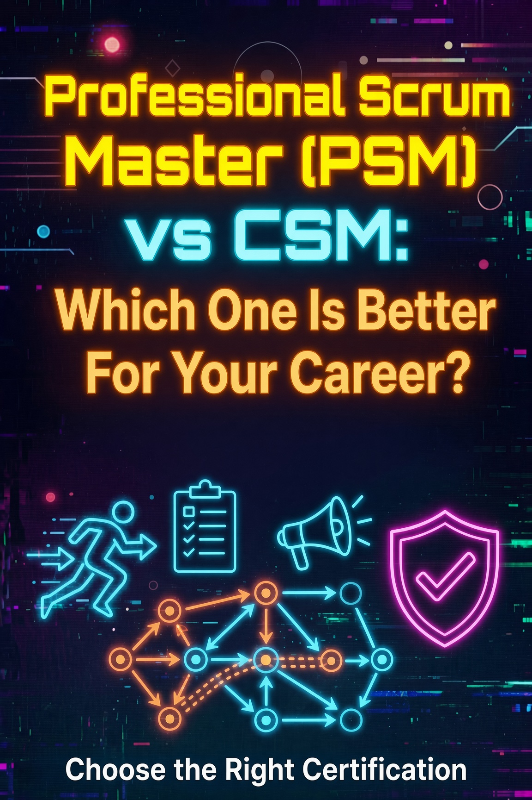

PSM I vs CSM: Which Scrum Master Certification Should You Choose?

The Scrum Master certification market has two big names: the Professional Scrum Master (PSM) from Scrum.org and the Certified ScrumMaster (CSM) from Scrum Alliance. Both prove you understand Scrum, but they differ sharply in cost, prerequisites, exam difficulty, and how employers treat them. I passed the PSM I with a 100% score, and this comparison covers every difference that matters before you spend money on either one.
Quick verdict: Take the PSM I. It costs less, requires no training course, never expires, and carries more weight with hiring managers. The CSM is only the better choice when a job posting or an employer explicitly asks for it, or when a company pays for the classroom course.
The Two Organizations Behind the Exams
Scrum.org was founded by Ken Schwaber, one of the two original creators of Scrum, and it owns the PSM line. Scrum Alliance was founded around the same time by a group of early Scrum practitioners and owns the CSM. Both organizations are independent, both are globally recognized, and neither one has an official advantage in the Scrum Guide itself. The difference is in how each certification is earned and maintained.
That difference comes down to one design decision. Scrum.org treats the exam as the certification: you study, you pass a hard test, and you are done. Scrum Alliance treats the classroom course as the certification: the exam is a checkpoint attached to a mandatory two-day class. Everything else about the two credentials flows from that single choice.
Head-to-Head Comparison
Here is the full comparison at a glance. The table below is the short version of this entire article, so refer back to it while you read the details.
| Factor | PSM I (Scrum.org) | CSM (Scrum Alliance) |
|---|---|---|
| Cost | $150 exam fee | $1,000 to $1,495 (course bundled) |
| Training course required | No | Yes, mandatory 2-day course |
| Number of questions | 80 | 50 |
| Time limit | 60 minutes | 60 minutes |
| Passing score | 85% | 74% |
| Question styles | Single answer, multiple answer, true/false | Multiple choice |
| Renewal | None. Lifetime validity | Every 2 years, 20 SEUs plus a fee |
| Overall difficulty | Higher | Lower |
Cost and the Course Requirement
The cost difference is not small. The PSM I costs $150 for the exam and nothing else. You can buy additional attempts at a reduced price if you do not pass the first time, but most people pass with self-study alone. The CSM bundles a mandatory two-day course with the exam, and that course typically runs between $1,000 and $1,495 depending on the instructor and the format.
There is no way around the CSM course. Scrum Alliance requires it, full stop. That makes the CSM roughly seven to ten times more expensive than the PSM I before you consider travel or time off work. If you are paying out of pocket, the PSM I is the clear financial winner, and the money you save can cover practice exams and a few books.
Some employers reimburse training budgets, which changes the math. If your company has a professional development budget and will cover the CSM course, the cost argument mostly disappears. You should still weigh the other factors below, because the course requirement affects more than price.
The time commitment differs just as much as the price. The CSM asks for two full classroom days up front, plus travel and preparation, and the credential is attached to that time. The PSM I asks for none of that. A motivated self-studier can go from zero to exam-ready in a few focused weeks by reading the Scrum Guide twice and working through practice exams. If you can learn at your own pace, the PSM I fits around a full-time job far more easily than a scheduled course does.
Exam Difficulty and What Each One Tests
The PSM I is the harder exam, and that is a feature, not a bug. It tests the 2020 Scrum Guide with scenario-based questions, many of which have more than one correct answer. You cannot pass it by memorizing slides, because the questions present situations and ask what the Scrum Team should do first, who is accountable for what, and which event a statement belongs to. The 85% pass mark leaves almost no room for careless errors.
Every PSM I question is built from the Scrum Guide itself, which is only about thirteen pages of dense prose. That narrows the study material considerably: you do not need to read a library of Scrum books, you need to understand one authoritative document cold. The exam rewards precise language, so questions about the Sprint Review and the Retrospective, or about who owns the Product Backlog versus who owns the Sprint Backlog, come down to the guide's exact wording.
The CSM exam is more forgiving. It tests what was covered in the course with standard multiple-choice questions, and the pass mark is 74%, which is a much lower bar. The instructor also sets part of the experience: some courses teach to the exam directly, and the exam is available right after the class ends. That combination makes the CSM measurably easier to earn.
Easier is not automatically worse. If your goal is a credential with the least friction, the CSM delivers. If your goal is to prove you actually understand Scrum, the PSM I is the stronger signal, because anyone can see that you passed a harder test without a course to lean on.
Renewal and Long-Term Value
The PSM I never expires. No continuing education units, no renewal fee, no lapsed certification to explain on a resume. Pass it once and the credential is yours for life, which is how most certifications should work.
The CSM expires every two years. To renew, you must earn 20 Scrum Education Units (SEUs) through courses, conferences, volunteering, or other approved activities, and pay a renewal fee on top of that. SEUs sound easy to earn, and they mostly are, but it is ongoing maintenance that the PSM I simply does not have.
For a hiring manager, a lapsed or renewable certification raises a small question that a lifetime certification never does. The PSM I also holds up better over a career, because it does not quietly expire during a job search or a gap between roles.
Regional Recognition and How Employers See Them
Both certifications are recognized worldwide, but the weight they carry shifts by region and by industry. In the United States, the CSM has deep roots in enterprise HR systems. Many corporate job descriptions for Scrum Master roles were written years ago and still list "Certified ScrumMaster (CSM)" by name, which means the CSM can clear automated screening filters that the PSM does not always match.
Outside the US, especially in Europe and Asia, the PSM tends to be the stronger credential. Scrum.org has a large presence in those markets, and tech-forward companies there treat the PSM I as the more credible test of Scrum knowledge. The gap is not huge, but it is real.
Among hiring managers who understand both, the PSM I generally wins the credibility contest because of the exam difficulty, the lower cost, and the lifetime validity. The main scenario where the CSM wins is a specific job posting that names it, or a company that has standardized on Scrum Alliance and will pay for the course. If neither applies, the PSM I is the safer bet almost everywhere.
Sample Question Comparison
The question styles tell you a lot about each exam. A PSM-style question forces you to reason from the Scrum Guide. A CSM-style question asks for recall from the course material. Here is one PSM-style question to show the difference.
Sample PSM I question: A Scrum Team is mid-Sprint when a stakeholder asks the Product Owner to add a new feature immediately. What should the Product Owner do first? (Select all that apply.)
A. Add the item to the Product Backlog and reorder it against existing items.
B. Ask the Developers to squeeze the feature into the current Sprint.
C. Work with the stakeholder to understand the value of the request.
D. Extend the Sprint to make room for the feature.
Answer: A and C. The Product Owner owns the Product Backlog and its ordering, and should weigh new requests against the Product Goal. The Developers plan the Sprint work and the Sprint Backlog, so B is wrong, and the Sprint timebox is fixed, so D is wrong.
A CSM-style question would instead ask you to recall a definition or a step from the course, with one clearly correct answer. Neither style is right or wrong, but the PSM style rewards understanding, while the CSM style rewards attendance and memory.
Decision Matrix: Which One Fits Your Situation
If you are still unsure, find your situation in the table below. The right choice falls out of your context faster than any general rule.
| Your situation | Best choice |
|---|---|
| Self-studying and paying out of pocket | PSM I |
| Employer requires CSM or covers the course | CSM |
| You want a certification that never expires | PSM I |
| You learn best in a structured classroom | CSM |
| You target tech roles or roles outside the US | PSM I |
| You need the lowest-friction credential quickly | CSM |
| You want the most credible proof of Scrum knowledge | PSM I |
Many people get both. A common path is PSM I first to prove understanding at low cost, then the CSM later if a specific employer asks for it and will pay for the course. The two credentials are complementary, not competing, when your employer foots the bill.
Final Verdict
The PSM I is the better certification for most people. It costs a fraction of the CSM, requires no classroom time, never expires, and proves more because the exam is harder. The CSM is the right choice in two specific situations: an employer requires it by name, or an employer covers the course cost and you want the classroom experience.
Whichever you pick, get the decision made before you book anything. The two credentials lead to the same roles, so the choice is about cost, time, and what your employer recognizes. A decision made from the comparison table above will serve you better than a gut call or a recruiter's offhand suggestion.
If you choose the PSM I, the exam is very passable with the right plan. I scored 100% on my attempt, and the preparation strategy is straightforward: study the 2020 Scrum Guide itself, understand empiricism and the accountabilities, and practice under real time pressure.
Decision Flowchart
The flowchart below walks the same decision visually. Follow the arrows from your situation and the answer falls out.
Ready to prepare? Read the complete PSM I study guide, which covers the exam format, the 2020 Scrum Guide concepts that matter most, and the mistakes that cost people points.